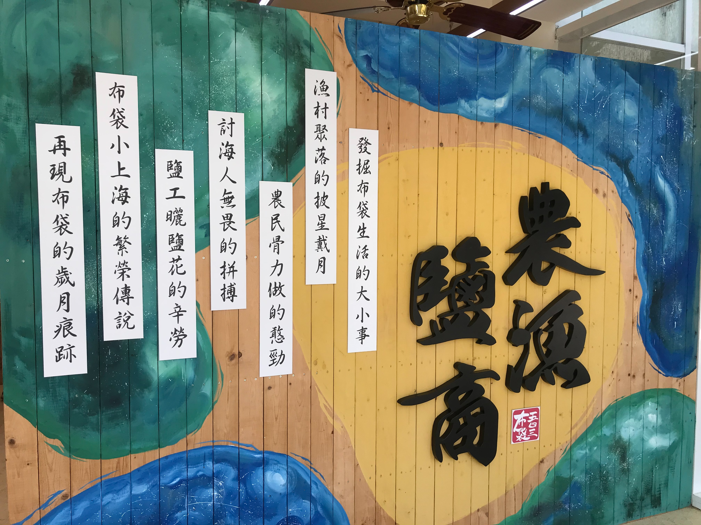
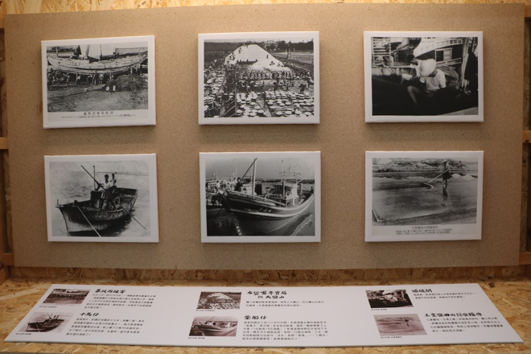
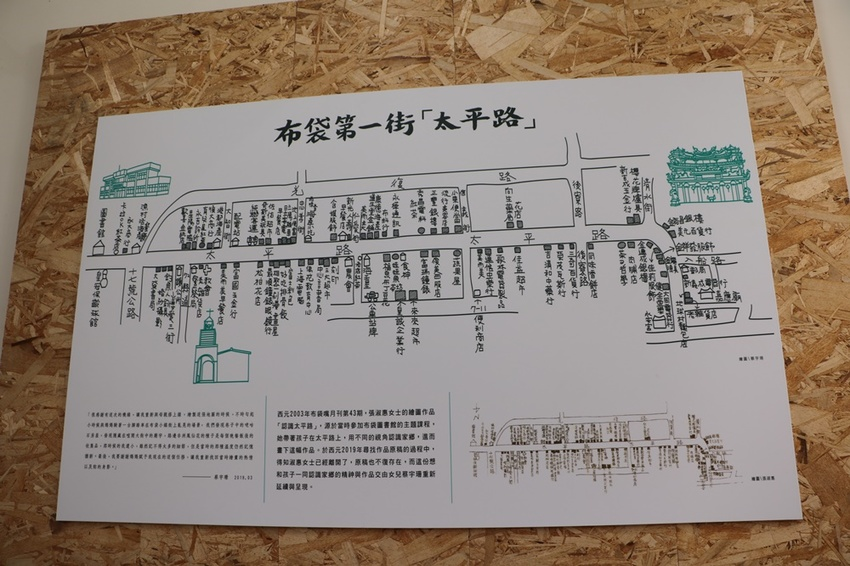
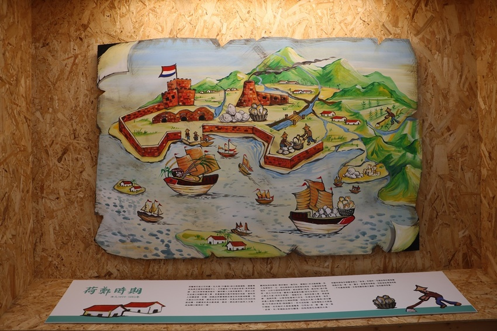
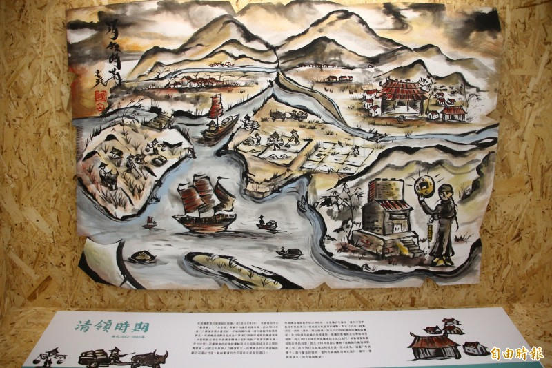
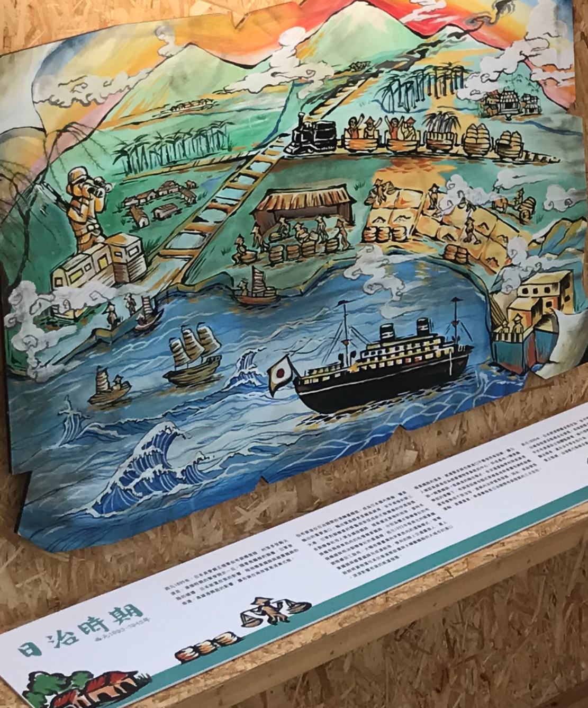
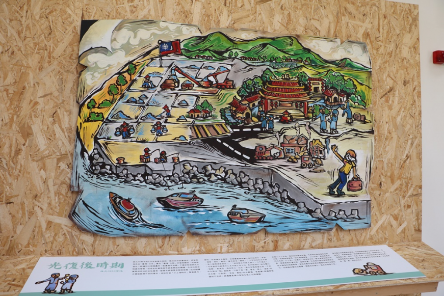

早期的布袋 |
|
|---|---|
布袋的經濟產業五四三故事館裡介紹了關於布袋的歷史、產業文化和產業文化和鄉土民情。右邊這張圖描述了布袋的經濟發展 靠著農、漁、鹽、商。 |
 |
|  |
歷史照片紀錄早期布袋人工作、發展農漁業的生活場景。 |
太平路早期布袋最繁華的一條街"太平路"。有各式各樣不同的商家，相當繁榮。 |
 |
四個不同時期的布袋 |
|  |
荷蘭與明鄭時期古稱「魍港」（今好美里一帶），其所開發，始於明末開墾，海盜顏思齊、鄭芝龍拓臺十寨之第六寨便設於魍港大坵田。 天啟四年（西元1624年）荷蘭東印度公司來臺後，魍港納入統 治，鄭成功遠涉海峽，驅離東印度公司勢力之後，鄭氏王朝亦遣部 將屯墾此地，並募集福建漳州、泉州三邑、泉州安溪等地先民遷居 開墾，當時本地較為荒涼，經先民集居經營後，而形成村落鬧市。 |
清領時期布袋鎮是嘉義縣開發最早的地區，舊稱布袋嘴，又稱冬港。冬港為布袋清領初期的稱呼，清康熙年代，位於八 掌溪口，大坵田沙嘴東南岸濱潟湖的一個內港。 |
 |
|  |
日治時期清朝與日本簽訂馬關條約後，臺灣割讓給日本。日本將布袋改稱為布袋街，屬臺南縣管轄。 1920年8月10日改稱為臺南州東石郡布袋庄。 |
民國時期中華民國接管臺灣後，民國35年改為臺南縣東石區布袋鄉，後來本鄉因布袋港與大陸通商，航運發達，人口激 增，於民國37年改制為鎮，民國39年改隸嘉義縣布袋鎮。 |
 |